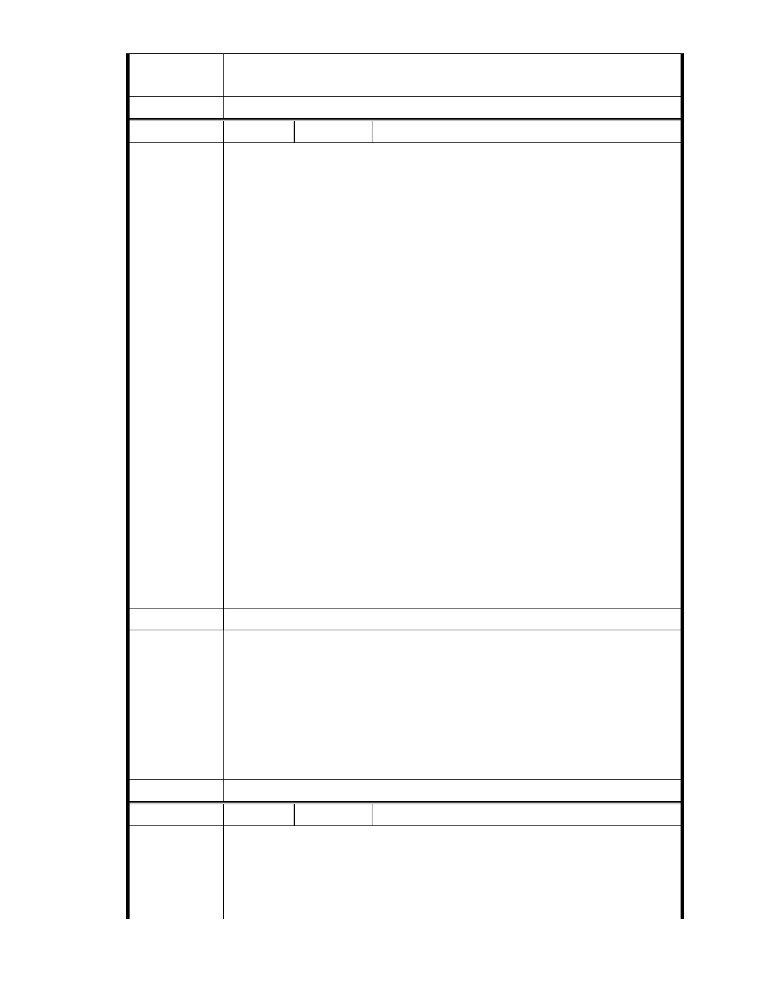

細目及範圍認定標準」第 31 條所列之安養照護設施。
三、相關陳情意見將納入本案審查人民意見，依法定程序辦理。
委 員 會 決 議 同編號 1。
編號
陳情理由
145 陳情人 大湖內閣大廈管理委員會
發文日期：中華民國 101 年 10 月 10 日
發文字號：內慈字第 1011001 號
主旨：有關「變更臺北市內湖區成功路五段大湖公園北側部分保護區及
道路用地為社會福利特定專用區主要計畫案」，本大廈全體住戶依據大
湖里『 公民投票』 結果，提出反對變更保護區陳情意見，敬請查照。
說明
一、依據 2012 年 9 月 24 日本大廈第 16 屆第 l 次臨時管委會決議辦理。
二、基於台北市保護區劃設的目的與意義、全球氣候驟變下的極端天候，
以及保護區對於台北市內湖區大湖里的重要價值，認為水土保持、天然
資源、生態與都市排水蓄洪等功能，應優先於社會福利設施開發使用。
三、依據民國 87 年 11 月 27 日慈濟內湖園區（台北市內湖區大湖段
120、133、144、145 等四筆）山坡地保護區溜地目（面積 31851 ㎡ ）大
湖里、秀湖里『公民投票』 結果：「有 91 % ( 4801 選舉人票）贊成闢
建水保公園、7 % ( 394 選舉人票）反對闢建水保公園、2 % ( 108 選舉人
票）廢票」之結果，建議本案應變更為水保公園，反對變更為社會福利
設施。
四、本大廈緊鄰慈濟內湖園區，變更後之負面影響最大，請貴會後續通
知本大廈管理委員會列席參與該案後續所有會勘、審議、專案小組會議
及大會，並請依政府資訊公開法將會議時間、地點，以及會議資料、紀
錄等相關資訊提前公開上網，俾便閱覽。
建議辦法
一、本案申請範圍於慈濟購得前已遭填平破壞作汽車停車場使用，已長
年不具保護區之功能；目前申請方案較先前方案已大幅降低開發強
度、調整使用項目並承諾大面積滯洪設施等回饋事項，顯示申請單
市府說明
位欲改善現況之誠意。
二、相關陳情意見將納入本案審查人民意見，依法定程序辦理。
三、後續審理程序將要求申請人加強與在地區民、社會大眾，就基地現
況、規劃方案及環境助益作為等方面加強溝通。
委 員 會 決 議 同編號 1。
編號
陳情理由
146 陳情人 大湖內閣大廈管理委員會
發文日期：中華民國 101 年 10 月 11 日
發文字號：內慈字第 1011002 號
主旨
有關「變更臺北市內湖區成功路五段大湖公園北側部分保護區及道路用
地為社會福利特定專用區主要計畫案」，本大廈全體住戶依據貴委員會專
- 216 -